Capítulo 2 Temas políticos
¿Cómo ha cambiado la sociedad en temas políticos?
2.1 Identificación política
2.1.1 ¿Cómo se posicionan políticamente los chilenos?
Figura 2.1: Identificación política (2021)
Entre 2016 y 2021 la identificación con la izquierda se ha mantenido estable (25,3% en 2021), mientras que el centro y la derecha han aumentado su participación (de 24,8% en 2016 a 36,1% en 2021, y de 14,1% a 17,5%, respectivament), en desmedro de la no identifiación política, que disminuyó de 35,8% a 19,3%.
Figura 2.2: Identificación política, según ola del estudio
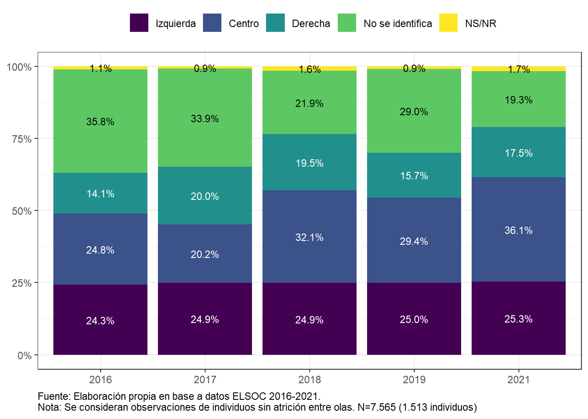Aunque los porcentajes son relativamente estables, esconden una alta fluidez en la identificación con las diferentes posiciones políticas por año.
Figura 2.3: Cambios en la identificación política, según ola del estudio

De manera consistente aproximadamente 48% de la población cambia su posición política cada año
Figura 2.4: Cambios en identificación política, según ola

El grupo político más estable (comparando posiciones politicas entre 2016 y 2021) es el de centro: 54,0% de quienes se posicionaban políticamente de Centro, lo hicieron también en 2021. En contraste, la No identificación política es la menos estable: solo 31,3% de quienes no se identificaban políticamente en 2016, lo hicieron también en 2021. Para la izquierda y la derecha, estos porcentajes son 47,8% y 47,6%, respectivamente.
Figura 2.5: Cambios en identificación política entre 2016 y 2021
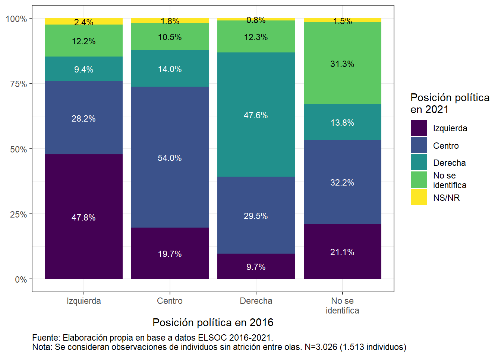A mayor edad mayor estabilidad en la posición política entre años
Figura 2.6: Cambios en identificación política, según grupo etáreo
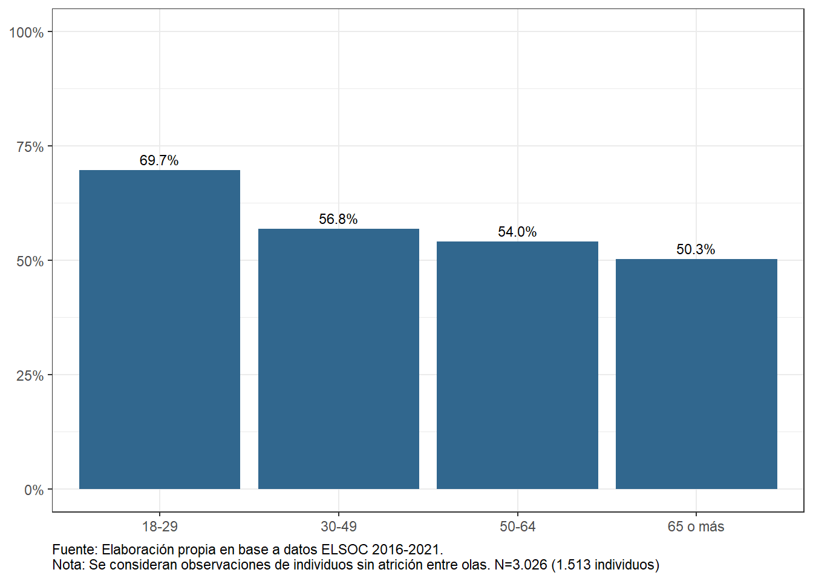2.1.2 Interés en la política y participación ciudadana
Figura 2.7: Interés en política, según ola del estudio
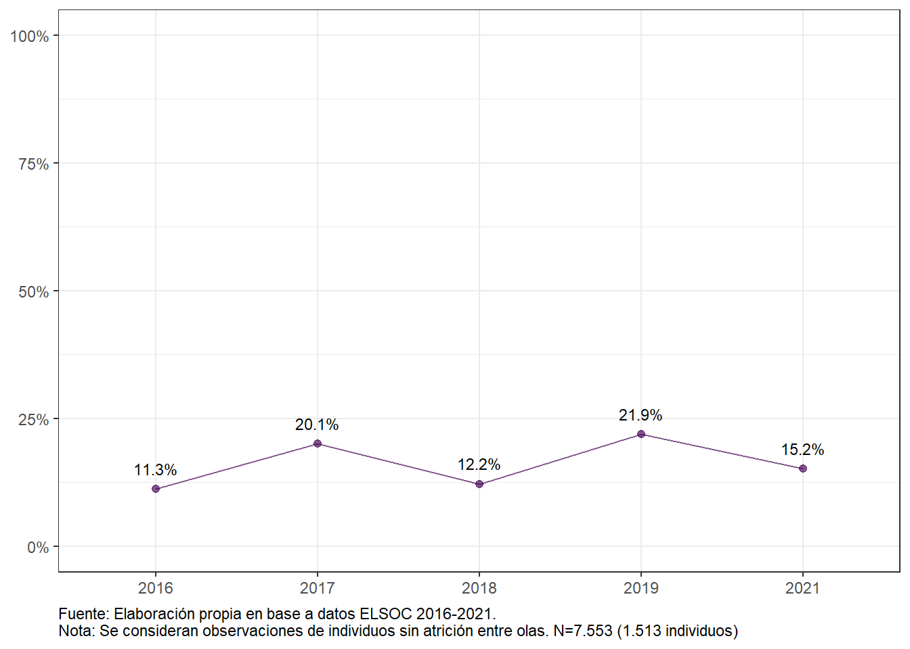Figura 2.8: Participación ciudadana, según ola del estudio

Figura 2.9: Identificación política, según grado de interes en la política (2021)
2.1.3 Opinión en temas de discusión pública
Figura 2.10: Acuerdo con temas de discusión pública, según posición política (2019-2021)
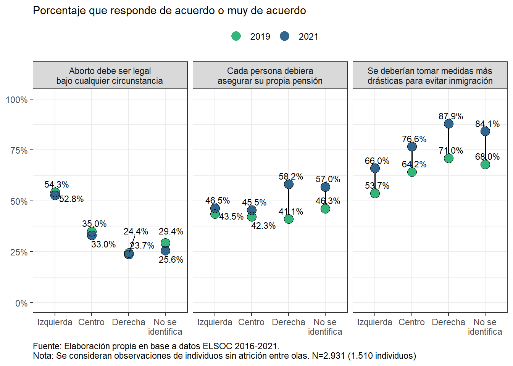2.2 Movimientos Sociales y Acciones Colectivas
2.2.1 Tipología de participación política


Figura 2.11: Legitimidad democrática por tipos de participación

Figura 2.12: Posición política por tipos de participación

Figura 2.13: Sexo por tipos de participación

Figura 2.14: Edad por tipos de participación

Figura 2.15: Interés por tipos de participación

Figura 2.16: Satisfacción con la democracia por tipos de participación

Figura 2.17: Posición política por tipos de participación
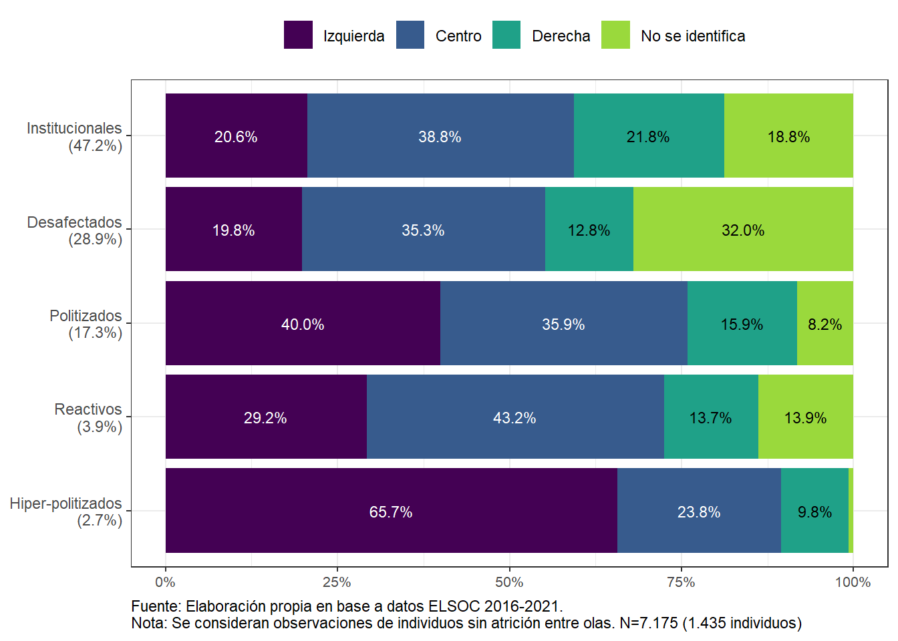Figura 2.18: Sexo por tipos de participación

Figura 2.19: Edad por tipos de participación
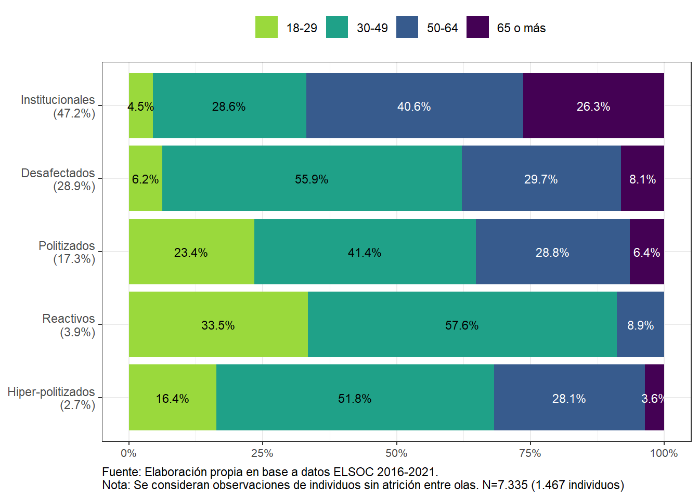Figura 2.20: Interés por tipos de participación
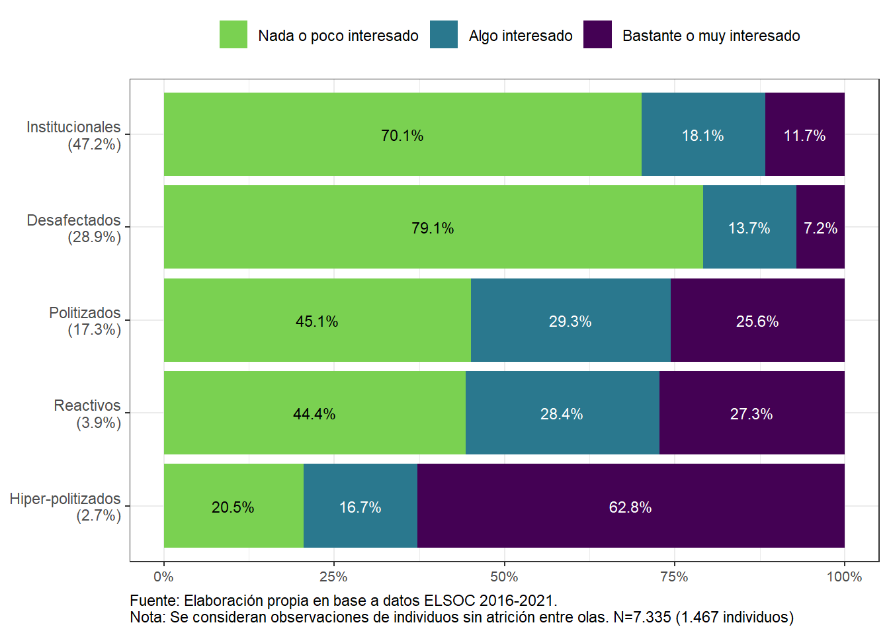Figura 2.21: Satisfacción con la democracia por tipos de participación

2.2.2 Ciclo de movilización política y estallido social
Figura 2.22: ¿Cuál de los siguientes movimientos sociales más valora? (2019-2021)
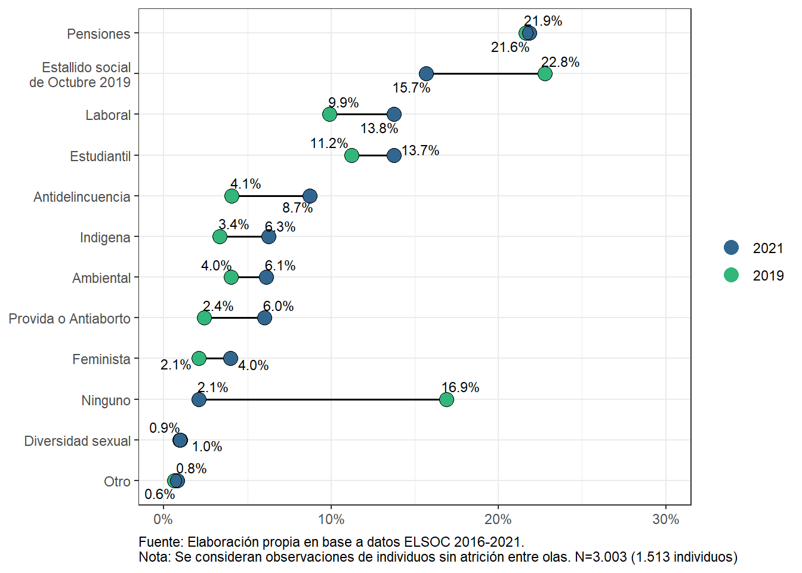Clasificacindo los movimientos sociales en las categorías “Progresistas” y “Conservadores,” se ve un claro aumento en la valoración de movimientos sociales progresistas.
Los movimientos sociales que se clasifican como progresistas son:
- Movimiento social de apoyo a la causa estudiantil
- Movimiento social de apoyo a demandas laborales
- Movimiento social de grupos ambientalistas
- Movimiento social de apoyo a las demandas indígena
- Movimiento social de apoyo a la diversidad sexual
- Movimiento feminista o de apoyo a la igualdad de género
- Movimiento por el cambio al sistema de pensiones
- Estallido social del 18 de Octubre de 2019
Mientras que los Conservadores:
- Movimiento social provida o antiaborto
- Movimiento social antidelincuencia
Figura 2.23: Movimiento social que más valora, Según ola
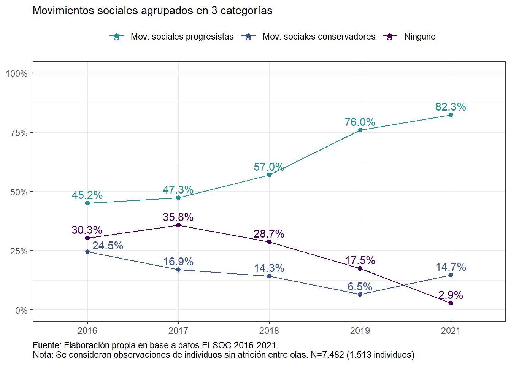Figura 2.24: Participación en movimientos sociales valorados, según ola

Figura 2.25: Participación en tipos de movimientos sociales, según ola
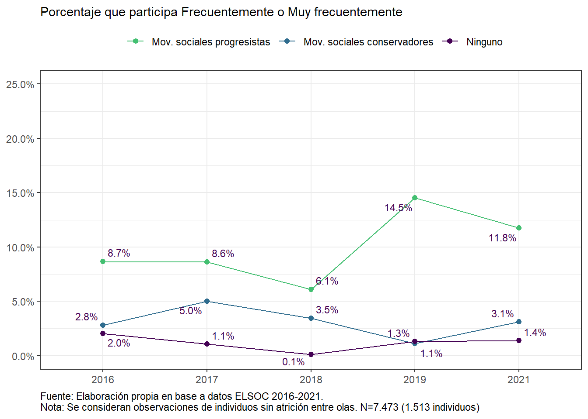2.3 Participación electoral
Figura 2.26: Participación electoral según estres financiero en 2021

2.4 Justificación de la Violencia
2.5 Confianza interpersonal y en instituciones
2.5.1 Confianza interpersonal
Figura 2.29: Confianza interpersonal, según ola

Figura 2.30: Confianza interpersonal (2021), según nivel educacional

Figura 2.31: Grado de confianza en instituciones, según ola

Figura 2.32: Grado de confianza en instituciones, según ola

Figura 2.33: Cambio en grado de confianza en instituciones (2016-2021)

2.6 Actitudes hacia la democracia
Figura 2.34: Preferencia por y satisfacción con la democracia, según ola
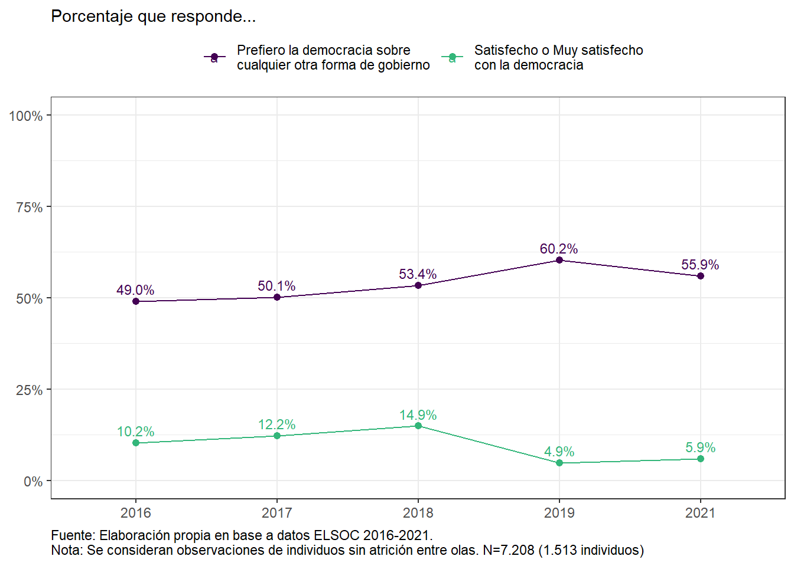Figura 2.35: Preferencia por y satisfacción con la democracia (2021), según posición ideológica

Figura 2.36: Preferencia por la democracia (2021), según posición ideológica

2.7 Cambio constitucional
Figura 2.37: Participación electoral, según elección

Figura 2.38: Voto retrospectivo Plebiscito Nueva Constitucion
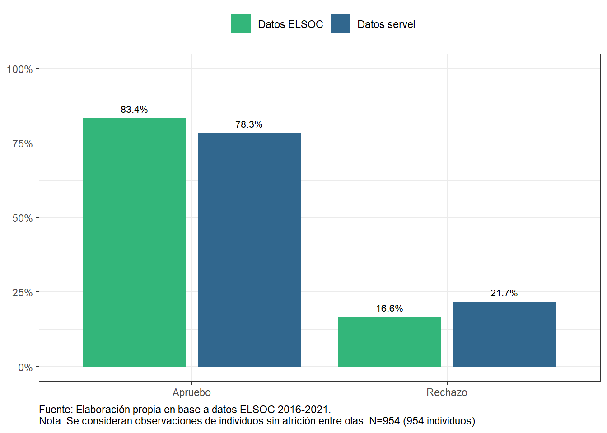Figura 2.39: Participación electoral, según tramo de edad

Figura 2.40: Voto en plebiscito de 2020, según identificación política

Figura 2.41: Voto en plebiscito de 2020, según voto en elecciones previas
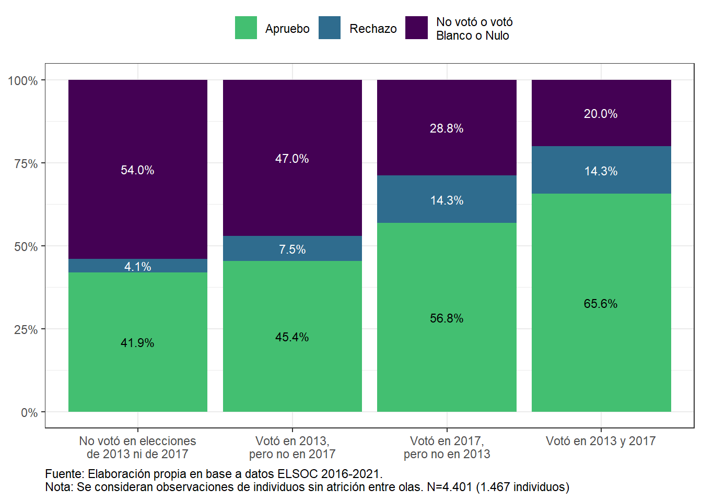Figura 2.42: Voto en plebiscito de 2020, según voto en elección presidencial de 2017
2.8 Optimismo constitucional
Figura 2.43: Optimismo constitucional
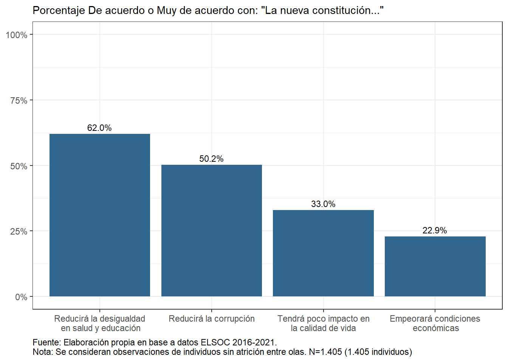Figura 2.44: Optimismo constitucional, según voto en plebiscito de 2020

Figura 2.45: Optimismo constitucional, según nivel educacional

Figura 2.46: Optimismo constitucional, según identificación política


Figura 2.47: Relevancia de cambio de Constitución según optimismo constitucional

Figura 2.48: Participación según optimismo constitucional

Figura 2.49: Participación en movimiento que más valora según optimismo constitucional